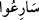

Bir insana şefâat ederse Peygamber
O kimse peygamberin şerîatı yolundan gider
Meşhur şeyhimiz Üftâde (k.s.) şöyle demiştir: Şüphesiz ki Allah Teâlâ bizi emir
âleminden ruhlar âlemine, sonra oradan cisimler âlemine göndermiş ve bizi en güzel
kıvamda yaratmış ve cüz’i bir irâde vermiştir. Ve şöyle buyurmuştur: “Eğer bu irâdenizi
ibâdetler, tâatler ve iyilikleri kazanma yönüne sarf ederseniz sizi cennete koyar, size
visâli ve cemâl-i ilâhîyi görmeyi kolaylaştırırım.” Sonra bu yola olanca gücümüzle
koşmamızı emir buyurdu. Çünkü müfâale ölçüsünde gelen koşunuz mânâsındaki
fiili mübâlağa içindir. Dünyanın ömrü kısa olduğu için Allah Teâlâ mübâlağa ile
koşmamızı emretmiştir. Peygamberler ve velîler gittiler, elbette biz de gideceğiz.
Öyleyse, Cenabı Hakk’ın yolunda koşmamız gerekir ki, tembellik ve ihmalkârlık ederek
yüksek derecelere ulaşma fırsatını kaçırmayalım. Koşmanın yolu tabîat mertebesinde
ilâhî emirlere uymak ve yasaklarından kaçınmaktır. Nefis mertebesinde kibir, riyâ,
kendini beğenme ve başkasından üstün görme, asabî olma, hased, mal ve mevki sevgisi
gibi kötü huylardan arındırmaktır. Tevâzu, ihlâs, başarılı olmayı Allah’tan bilmek,
yumuşak huyluluk, sabırlı olmak, kaderine râzı ve teslim olmak, aşk, irâde ve benzeri iyi
huylarla nefsi bezemektir. Ruh mertebesinde ilâhî mârifeti elde etmek; yâni Allah
Teâlâ’yı bilmektir. Sır mertebesinde ise Allah’tan başka her şeyi terk etmektir.
(Rûzbihân) Baklî şöyle demiştir: Allah Teâlâ mürîdleri koşma, âşıkları da cemâl-i
ilâhîye iştiyâk sıfatıyla dâvet etmiştir. Bunların hepsi ilâhî hitabın şümûlüne girmiş
olması muhtemeldir. Çünkü hepsi O’nu gerçek mârifetle bilmedikçe ve gerçek mânâda
O’na kulluk etmedikçe günahlar denizine düşmüşlerdir. Bu sebeple hepsini rahmeti
denizine temizlenmeleri için çağırdı ki, O’nu tanımakla gururlarından temizlensinler.
Allah’a ulaştıklarında da O’nu gerçekten gereği gibi tanıyamadıklarını anlarlar. Bunun
üzerine Allah onları ellerinden tutup çeşitli lütuflarıyla ikramda bulunur. Sonra
müsâbaka kesin bir niyet ve istek sonucu olur.
Mesnevî’de şöyle geçer:
İster hızlı davransın ister ağır
Arayan sonunda mutlaka bulur
“Genişliği gökle yerin genişliği kadar olan cennete”; yani, âyet-i kerîme’de geçen
semâvât ve arz kelimelerinin başındaki lâm harfinin istiğrak/umûmî mânâsında olması
hâlinde, genişliği birbirine eklendiği farz edildiğinde yedi kat gök ve yedi kat yer
genişliğinde olan cennete koşuşun, demek olur. Cennetin genişliği bu kadar olursa,
uzunluğunu sen düşün. Zira bir şeyin uzunluğu genişliğinden her zaman büyüktür.
İsmail Süddî demiştir ki; Şâyet gökler ve yer susam tanesi büyüklüğünde paramparça
olsa ve her parça sayısınca Allah Teâlâ’nın birer cenneti bulunsa yine de her birinin
genişliği yer ve gökler genişliğinde olurdu.